京都工芸繊維大学 応用化学課程 高分子材料デザインコース
高分子合成化学研究室 KAMBAYASHI LAB.
写真館
2026
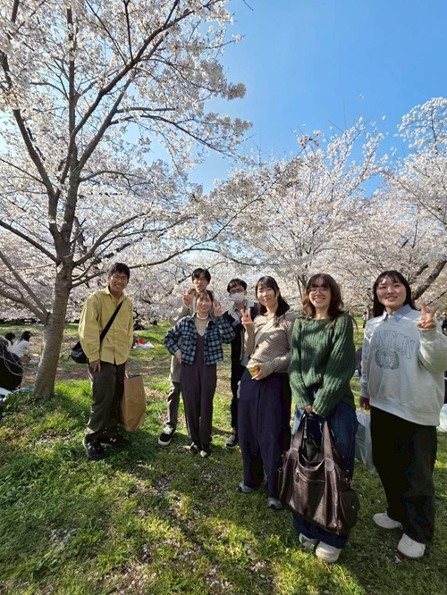
新歓＆お花見
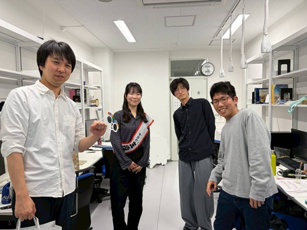
Happy Birthday 1

ISReP in Kyoto
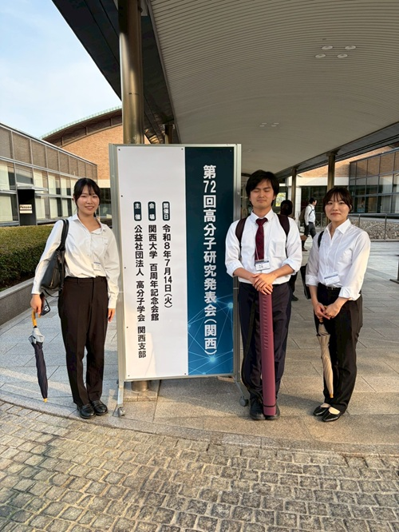
高分子研究発表会[関西]
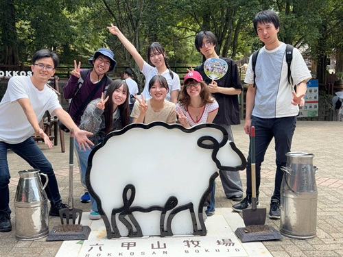
遠足@六甲山牧場
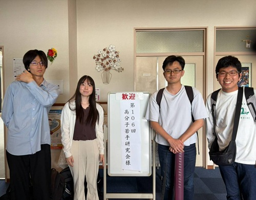
第106回高分子若手研究会（関西）

Merci pour tout, Chloé !
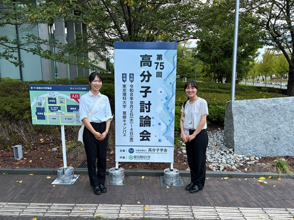
第75回高分子討論会
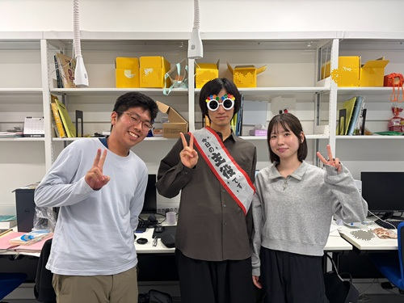
Happy Birthday 2
2025
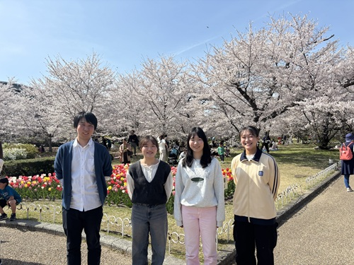
新歓＆お花見
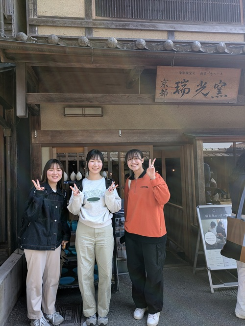
春のレクレーション
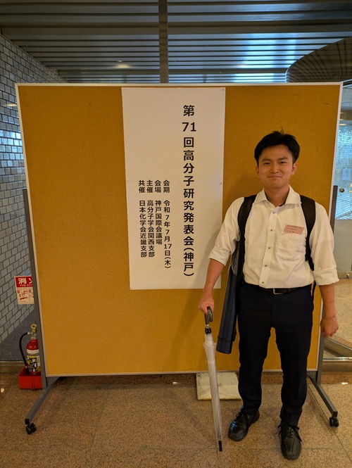
第71回高分子研究発表会（神戸）
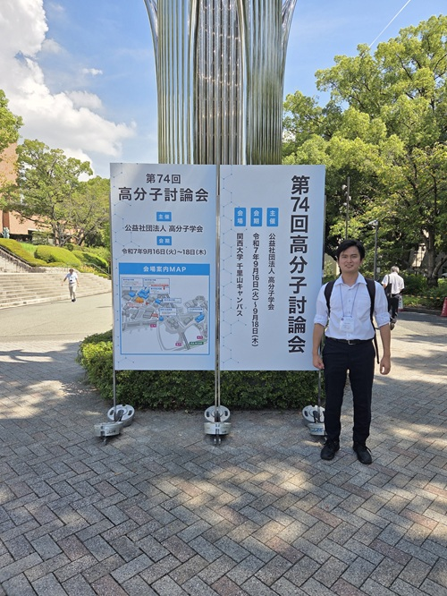
第74回高分子討論会
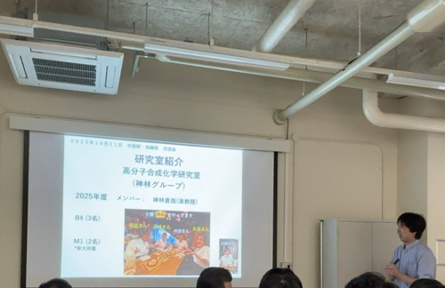
研究交流会with中西研・加藤研
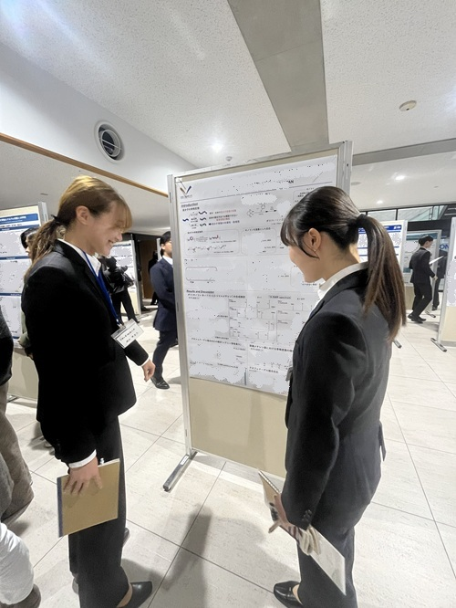
第三回高分子結合制御研究会
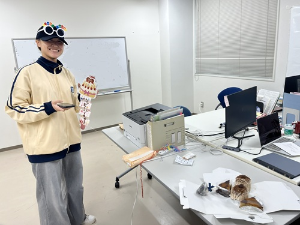
Happy Birthday
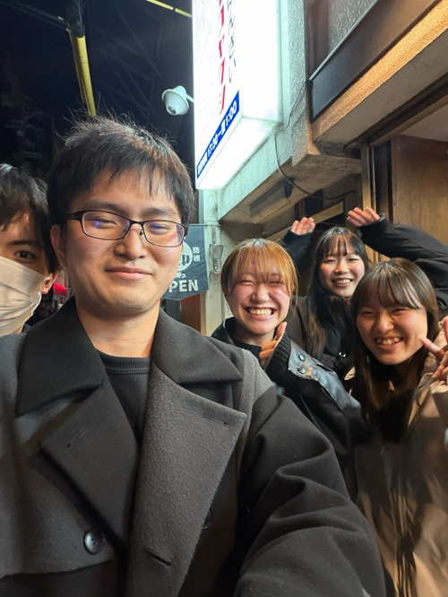
忘年会
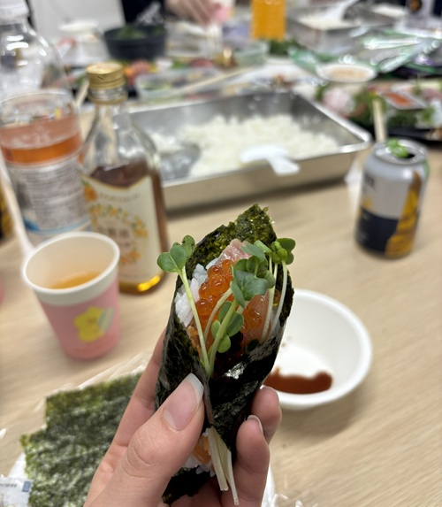
卒研＋お疲れ会with加藤研
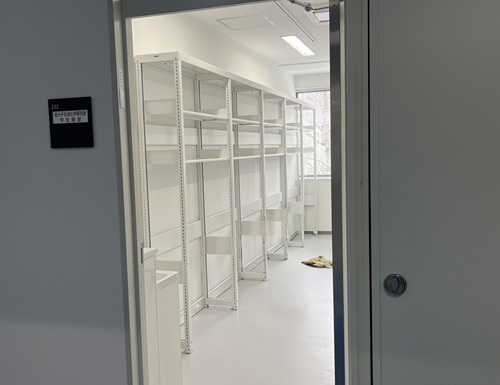
引っ越し
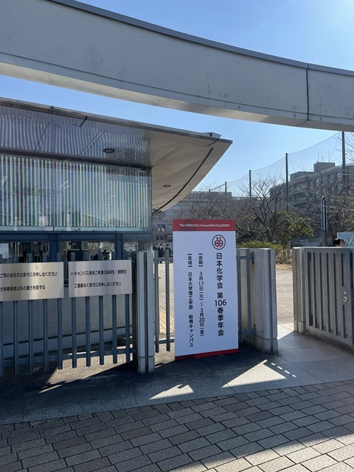
26春季年会
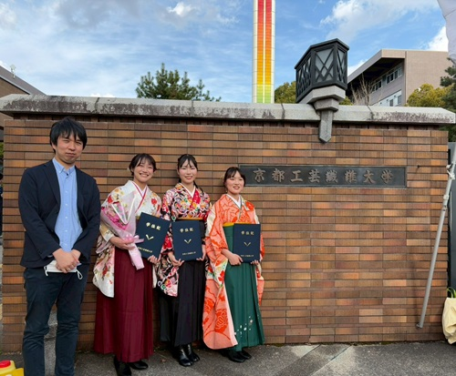
卒業式
Copyright © 2025
Kanbayashi Lab, Kyoto Institute of Technology.